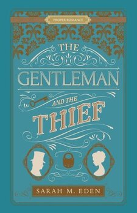

Romance
As everyone knows, romance books can be fun and insightful. However, they can also be depressing or offensive. With these in-depth summaries, you can decide whether you want to read that book or not, without even having to open the cover.
SERIES
Dread Penny
- The Lady and the Highway Man
- The Gentleman and the Thief
- The Merchant and the Rogue
- The Bachelor and the Bride
- The Queen and the Knave
Savage Wells
Hope Springs
- Longing For Home
- Longing For Home: Hope Springs
- Love Remains
- My Dearest Love
- Long Journey Home
- Valley of Dreams
- Choices of the Heart
Blue Orchid Society
Jonquill Brothers
- Kiss of a Stranger
- Friends and Foes
- Drops of Gold
- As You Are
- A Fine Gentleman
- For Love or Honor
- The Heart of the Vicar
- Charming Artemis
Lancaster Family
- Seeking Persephone
- Courting Miss Lancaster
- Romancing Daphne
- Loving Lieutenant Lancaster
- Charming Artemis
War of 1812
Romance on the Orient Express
Georgian Gentleman
STAND ALONE (BY AUTHOR)
Sarah M Eden
Jennifer Moore
- Becoming Lady Lockwood
- Lady Emma's Campaign
- Simply Anna
- Miss Burton Unmasks a Prince
- Lady Helen Finds her Song
- A Place for Miss Snow